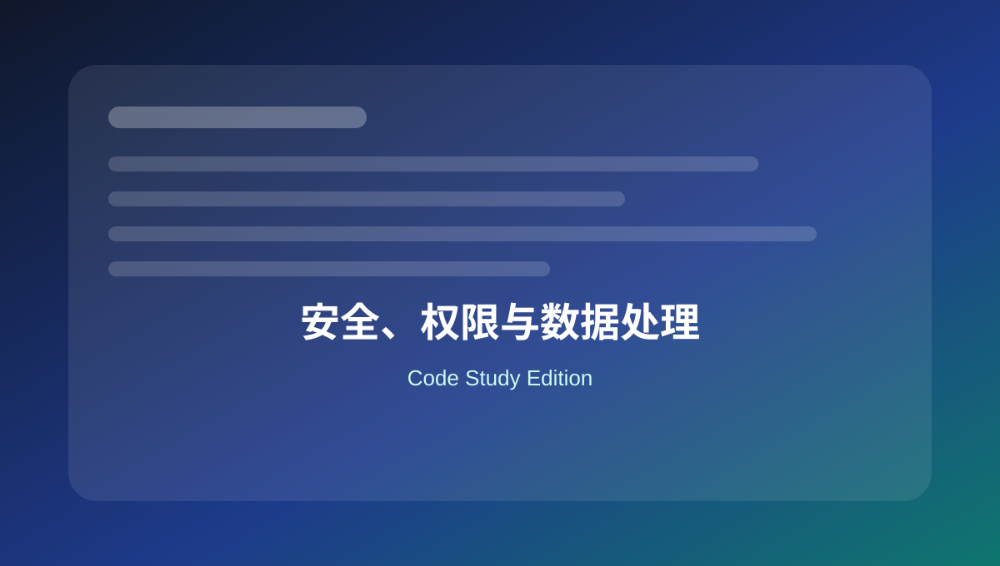

14 安全、权限与数据处理
整理 capability、nonce、sanitize、validate、escape、$wpdb prepare 和安全删除。

本页关键词
current_user_can
wp_nonce
sanitize
escape
wpdb prepare
学习目标
- 会做权限检查
- 会使用 nonce
- 会清理输入和转义输出
- 会安全写 SQL
- 知道删除操作要谨慎
代码使用提醒
本页代码适合用于学习和研究。复制到正式网站前，请先备份，并优先在测试环境验证。
涉及用户输入、后台保存、接口请求、删除操作和邮件发送时，要同时考虑权限、nonce、sanitize、validate 和 escape。
1. 权限检查
基础
<?php
if ( ! current_user_can( 'manage_options' ) ) {
wp_die( 'You do not have permission.' );
}
后台敏感操作必须检查 capability。
2. 创建和验证 nonce
基础
<?php
// 输出
wp_nonce_field( 'delete_item_action', 'delete_item_nonce' );
// 验证
if ( ! isset( $_POST['delete_item_nonce'] ) || ! wp_verify_nonce( $_POST['delete_item_nonce'], 'delete_item_action' ) ) {
wp_die( 'Invalid nonce.' );
}
nonce 防止跨站请求伪造，不替代权限检查。
3. sanitize 输入
基础
<?php
$name = isset( $_POST['name'] ) ? sanitize_text_field( $_POST['name'] ) : '';
$email = isset( $_POST['email'] ) ? sanitize_email( $_POST['email'] ) : '';
$url = isset( $_POST['url'] ) ? esc_url_raw( $_POST['url'] ) : '';
$text = isset( $_POST['message'] ) ? sanitize_textarea_field( $_POST['message'] ) : '';
不同类型数据使用不同清理函数。
4. escape 输出
基础
<?php
echo '<p>' . esc_html( $name ) . '</p>';
echo '<input value="' . esc_attr( $name ) . '">';
echo '<a href="' . esc_url( $url ) . '">Visit</a>';
echo wp_kses_post( $allowed_html_content );
输出到不同位置，用不同 escape 函数。
5. 验证白名单参数
实用
<?php
$allowed_orderby = array( 'date', 'title', 'menu_order' );
$orderby = isset( $_GET['orderby'] ) ? sanitize_key( $_GET['orderby'] ) : 'date';
if ( ! in_array( $orderby, $allowed_orderby, true ) ) {
$orderby = 'date';
}
验证比清理更具体。白名单是很常用的安全方式。
6. $wpdb prepare 查询
进阶
<?php
global $wpdb;
$email = 'customer@example.com';
$row = $wpdb->get_row(
$wpdb->prepare(
"SELECT * FROM {$wpdb->users} WHERE user_email = %s",
$email
)
);
拼 SQL 时必须 prepare，不要直接拼接用户输入。
7. 安全删除操作流程
实用
<?php
function mysite_delete_item() {
if ( ! current_user_can( 'manage_options' ) ) {
wp_die( 'No permission.' );
}
check_admin_referer( 'mysite_delete_item' );
$item_id = isset( $_GET['item_id'] ) ? absint( $_GET['item_id'] ) : 0;
if ( $item_id ) {
wp_delete_post( $item_id, true );
}
wp_safe_redirect( admin_url( 'admin.php?page=mysite-items' ) );
exit;
}
删除操作至少要有权限、nonce、ID 类型处理和安全跳转。
本页总结
安全代码的核心顺序是：权限检查 → nonce 验证 → 输入清理/验证 → 安全处理 → 输出转义。